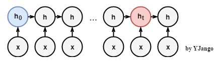
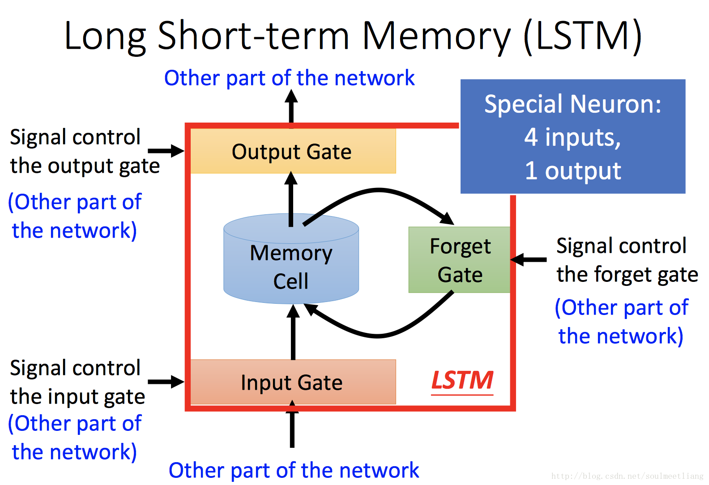
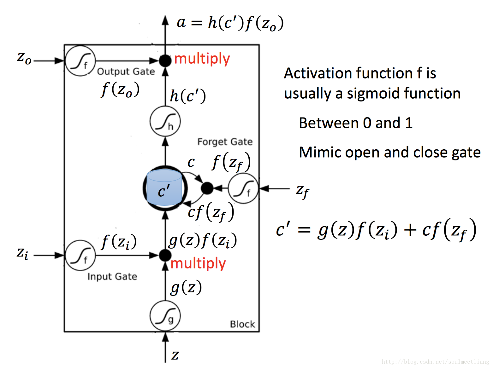
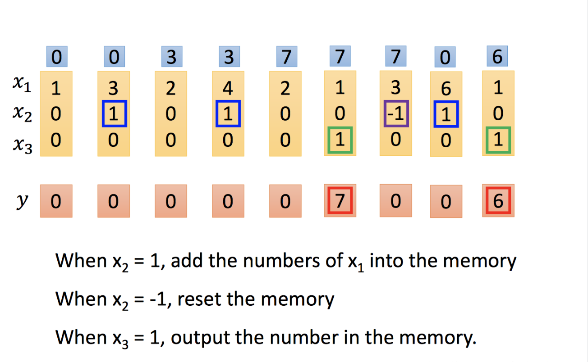

实际问题：
但普通的RNN结构却难以传递相隔较远的信息。
梯度消失：
当特征值小于1时，不断相乘的结果是特征值的
次方向
衰减；
梯度爆炸： 当特征值大于1时，不断相乘的结果是特征值的t次方向
扩增。 这时想要传递的
中的信息会被掩盖掉，无法传递到
。

LSTM：三个门， 四个输入，五个函数， 一个输出



参考链接：
理解LSTM
 次方向
次方向 衰减；次方向衰减；
衰减；次方向衰减； 扩增。 这时想要传递的
扩增。 这时想要传递的 中的信息会被掩盖掉，无法传递到
中的信息会被掩盖掉，无法传递到 。扩增。 这时想要传递的中的信息会被掩盖掉，无法传递到。次方向衰减；扩增。 这时想要传递的中的信息会被掩盖掉，无法传递到。
。扩增。 这时想要传递的中的信息会被掩盖掉，无法传递到。次方向衰减；扩增。 这时想要传递的中的信息会被掩盖掉，无法传递到。